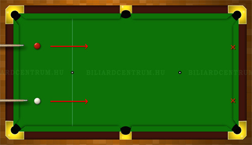
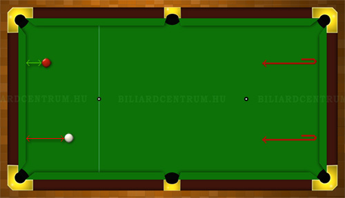
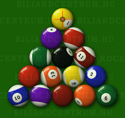

Ki kezdi a játékot?
A kezdés jogát a biliárdgolyók felrakása előtt tempólökéssel szokás eldönteni. Ez azt jelenti, hogy a két játékos a biliárdasztal egyik végéről közel egy időben meglök egy-egy golyót, megcélozva a szemközti mandinert. Amelyik játékos golyója a biliárdasztal végéhez közelebb áll meg visszatéréskor, az eldöntheti, hogy ő maga, vagy a másik fél kezdje a játékot.
Akinek a golyója érinti az oldalsó falat, vagy lyukba esik, esetleg átmegy az ellenfél térfelére, az elveszti a tempólökést, tehát a kezdés jogának eldöntése ekkor is a másik játékost illeti.
A tempólökést a játékosok egyszerre indítják az asztal egyik végéről,
a szemközti falat (mandinert) célozva.
A visszaérkezett, nyugalmi helyzetbe került golyók
faltól való távolsága dönt a kezdés jogáról.
Általában csak az első játékkezdést szokták a fent leírtak szerint eldönteni, utána felváltva kezdenek a játékosok.


A biliárdgolyók felrakása
A játékhoz 15 színes, illetve 1 db fehér golyót használnak. A golyókat háromszög alakzatban kell a játék kezdésekor felhelyezni a biliárdasztalra, mégpedig úgy, hogy a háromszög 2 alsó csúcsára ne egy csoportba tartozó golyók kerüljenek. A fekete golyót a harmadik sorban, középre kell elhelyezni. A többi biliárdgolyó elhelyezése tetszőleges. A háromszög csúcsán lévő, legelső golyónak kell a posztón megjelölt pontra az ún. tőpontra kerülnie. (Nem a feketének!)
